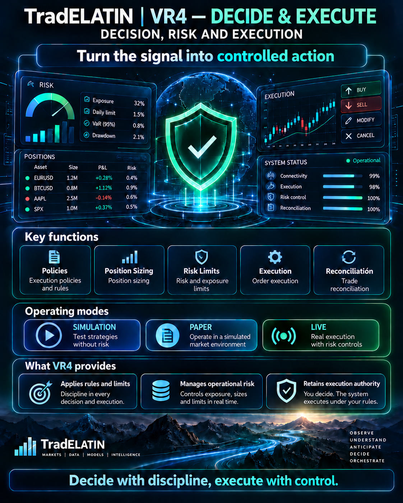

SIMULATION
Deterministic scenarios and modeled execution frictions; no real orders.
TradELATIN VR4 is the decision and execution component layer. It owns decision policy, risk controls, position sizing, execution modes, order lifecycle, reconciliation, exposure, limits and execution authorization. SIMULATION, PAPER and LIVE are VR4 execution modes; LIVE is explicitly controlled and gated.
No autonomous live-trading capability is currently claimed.

Modes share the decision and risk boundary; each transition requires explicit authorization.
Deterministic scenarios and modeled execution frictions; no real orders.
Paper orders and reconciliation without committing real capital.
Requires authorized adapters, permissions, limits, independent validation and supervision. No deployment with real capital is claimed.
No transition to real execution can occur automatically merely because a prediction exists.
These responsibilities define the component architecture. They do not establish that LIVE is deployed with real capital.
Entry and exit conditions under explicit authorization.
Exposure limits and portfolio constraints.
Algorithms, order states, and controlled routing.
Transaction costs, spread, slippage, and latency.
Partial fills, rejection, and liquidity constraints.
Orders, fills, positions, and accounting consistency.
Permissions, operating modes, and human supervision.
Complete reconstruction of decisions and orders.
Automatic stop conditions and manual kill switch.
Supervisory interface for decisions, authorized signals, orders, positions, exposure, limits, execution state, alerts, traceability, and kill-switch controls.
Decision policies, position sizing, portfolio constraints, exposure control, risk evaluation, execution planning, and safeguards.
Controlled connection of VR3 outputs with execution adapters, including permissions, idempotency, reconciliation, sandbox/live separation, observability, and end-to-end testing.
SIMULATION and PAPER model commissions, spreads, slippage, latency, fills, rejection, liquidity constraints, disconnections, stress and adverse scenarios within Processing / Integration. LIVE requires explicit authorization and separate deployment gates.
LIVE is a gated execution mode, not a claim of a real-capital deployment.
VR4 retains decision and execution authority. SIMULATION, PAPER and LIVE remain distinct modes under explicit risk controls and authorization. No production or real-capital deployment is claimed.